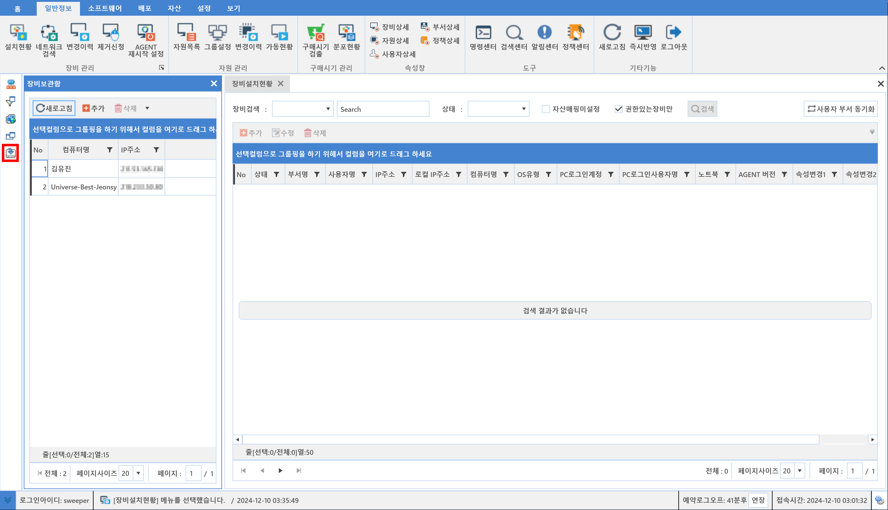
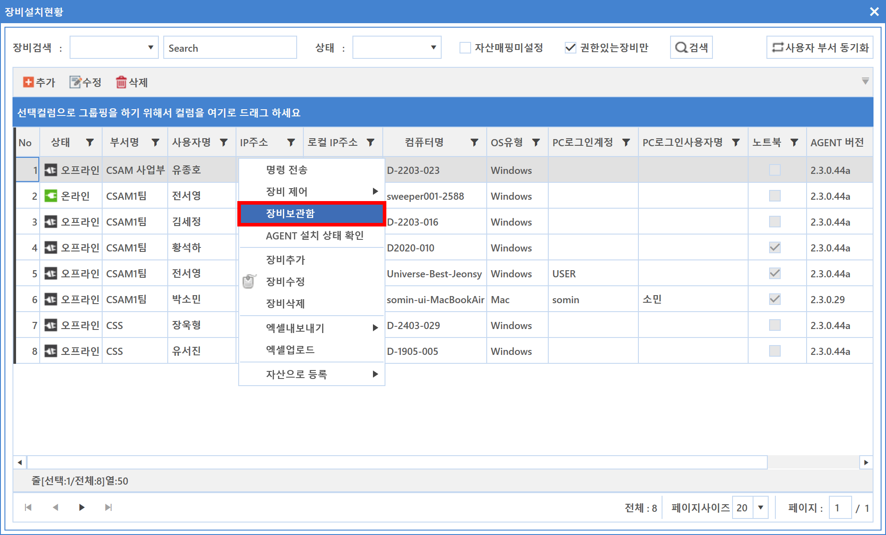
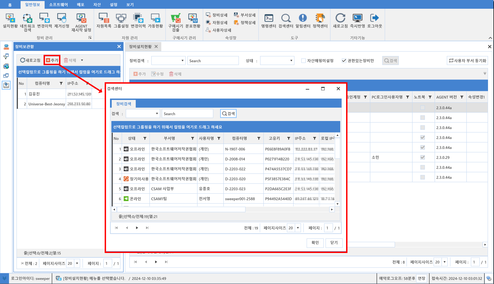
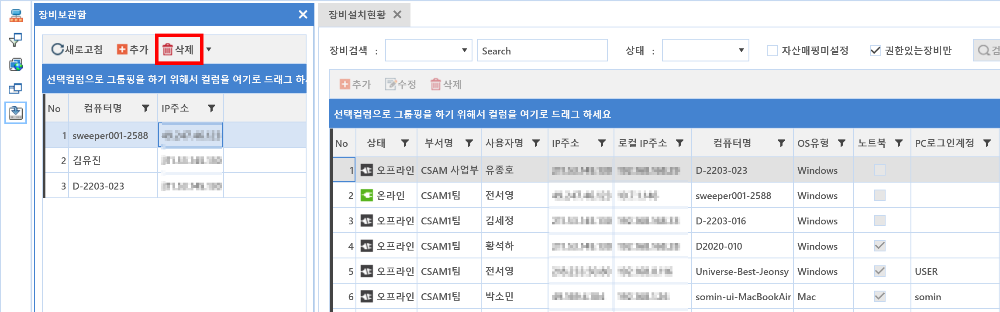
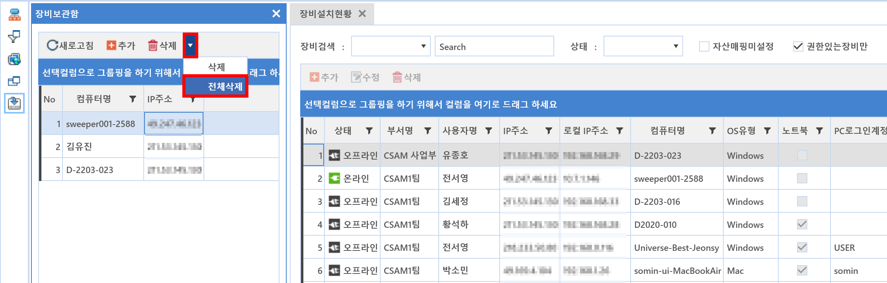

1-2-1-5. 장비보관함
1-2-1-5. 장비보관함
Source: https://www.sweeper.or.kr/etc/manual/1215.html
1-2-1-5. 장비보관함
1. 개요 ›› 1-2. 화면구성 ›› 1-2-1. 조직도 ››


특정장비(점검이 필요하거나, 잦은 문제가 발생하는 장비)들을 임시로 담아두고 관리하는 용도로 사용합니다. 장비의 정보가 보이는 모든 메뉴에서 우클릭 메뉴를 통해 장비보관함으로 이동할 수 있습니다.

장비보관함에 장비 등록 방법
- 우클릭 명령으로 추가

- 장비보관함에서 추가

장비보관함에서 장비 삭제 방법
- 장비보관함에서 장비 선택후 삭제

- 장비보관함에서 전체 삭제

© Copyright SWeeper Inc.. All Rights Reserved